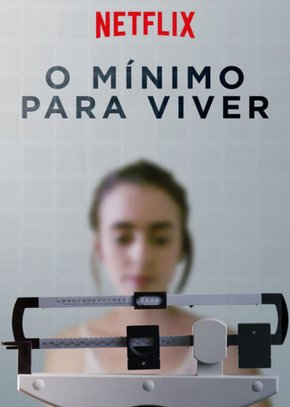

Nerve
O Mínimo Para Viver
Felicidade Por um Fio
Milagres do Paraíso
Enola Holmes
Descrição
A estudante Vee, pressionada pelos amigos, decide participar do jogo online Nerve,
que faz desafios reais aos seus jogadores. Porém, o jogo toma um rumo assustador e,
ao chegar no estágio final, Vee precisa tomar decisões que irão determinar o seu futuro.

Descrição
Uma jovem está lidando com um problema que afeta muitos outros no mundo: a anorexia.
Sem perspectivas de se livrar da doença e ter uma vida feliz e saudável, a moça passa os dias sem esperança.
Porém, quando ela encontra um médico não convencional que a desafia a enfrentar sua condição e abraçar a vida, tudo pode mudar.
Descrição
Violet Jones (Sanaa Lathan) é uma publicitária bem-sucedida que considera sua vida perfeita,
tendo um ótimo namorado e uma rotina organizada meticulosamente para conseguir estar sempre impecável.
Após uma enorme desilusão,ela resolve repaginar o visual e o caminho de aceitação
de seu cabelo está intrinsecamente ligado à sua reformulação como mulher, superando traumas que vêm desde a infância e pela primeira vez se colocando acima da opinião alheia.
Descrição
Christy e Kevin Beam são pais de três garotas: Abbie, Annabel e Adelynn.
Cristãos convictos, os Beams vão à igreja com frequência. Um dia, Annabel começa a sentir fortes dores na região do abdomem.
Após muitos exames, é constatado que a garota possui um grave problema digestivo.
Tal situação faz com que Christy busque a todo custo algum meio de salvar a vida da filha,
ao mesmo tempo em que se afasta cada vez mais de sua crença em Deus.
Descrição
Enola Holmes usa seus poderes de dedução para despistar seu irmão Sherlock e encontrar sua mãe.